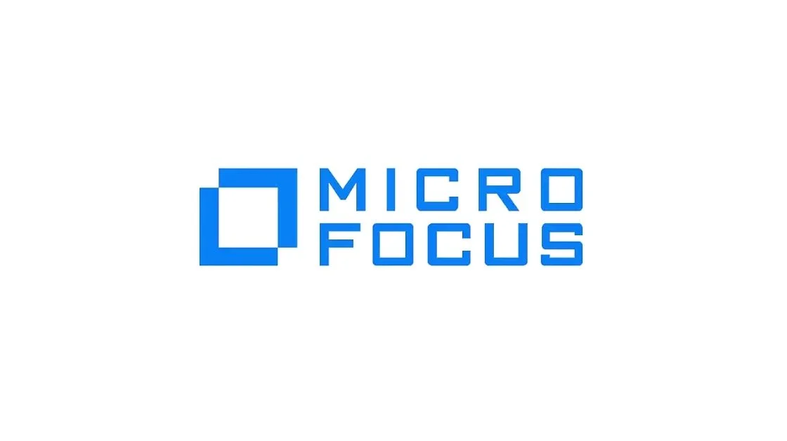

Requirements
- Home
- Engineering Jobs

Comapany Name : Micro Focus
Job Role : Quality Engineer
Branch :2023/22/21/20/19/18
CTC : up to ₹8 LPA*
Location : Bangalore
Description :Micro Focus is hiring for the post of Quality Engineer.
A student from various disciplines can apply for the Micro Focus off-campus drive 2023.
Interested and eligible candidates can read more details below
Eligiblity Criteria Bachelor’s or Master’s degree in Computer Science, Information Systems, or equivalent
Typically 0-2 years experience.
Prefered Skills :Experience or understanding of software systems design tools and languages.
Good analytical and problem solving skills.
Understanding of design for software systems running on multiple platform types
Understanding of basic testing, coding, and debugging procedures
Good written and verbal communication skills; mastery in English and local language.
Roles And Responsibility : Codes and programs enhancements, updates, and changes for portions and subsystems of systems software, including operating systems, compliers, networking, utilities, databases, and Internet-related tools
Executes established test plans and protocols for assigned portions of code; identifies, logs, and debugs assigned issues.
Develops understanding of and relationship with internal and outsourced development partners on software systems design and development.
Participates as a member of project team of other software systems engineers and internal and outsourced development partners to develop reliable, cost effective and high quality solutions for low to moderately- complex products.

To Apply ! ! !